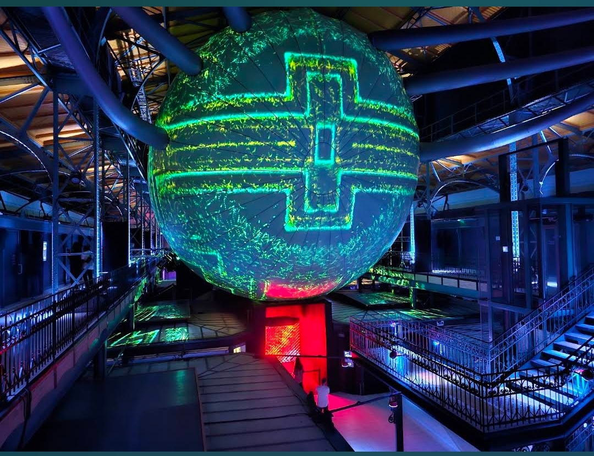
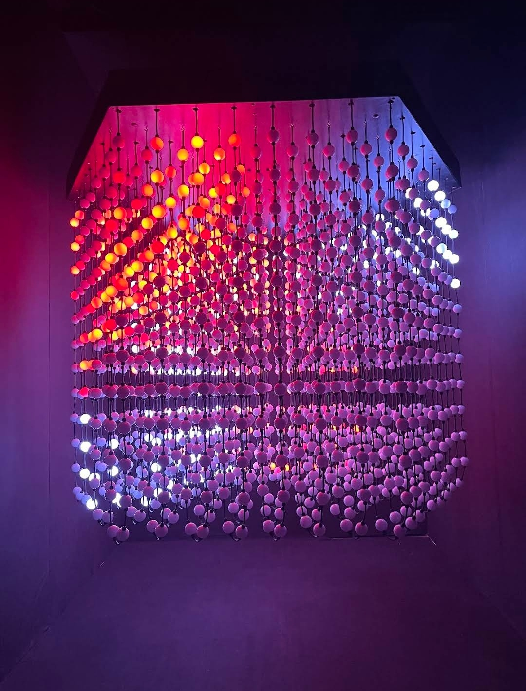
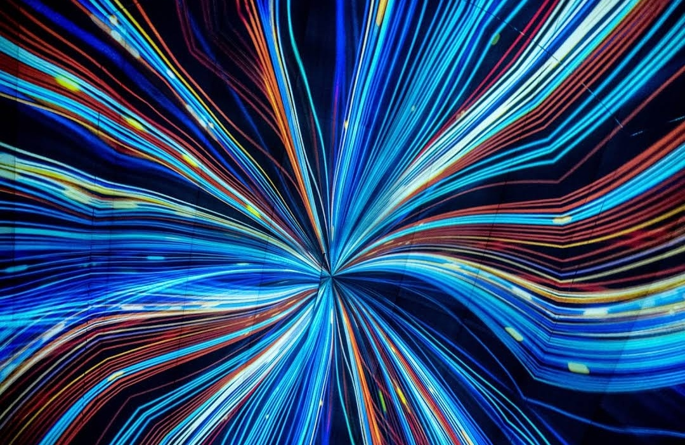
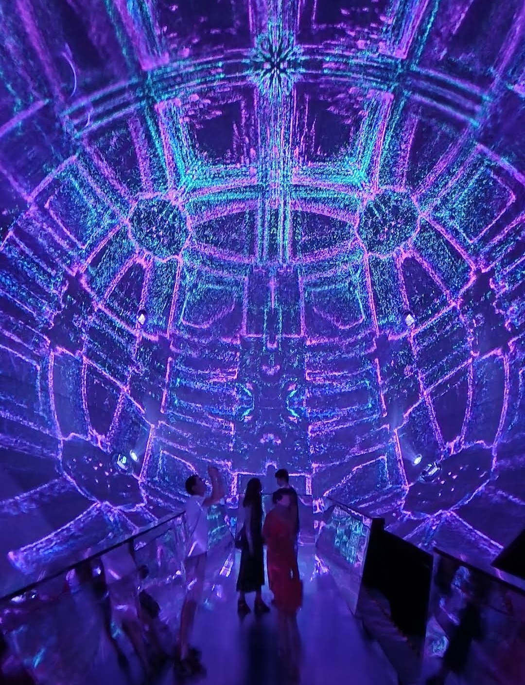

🌸 Utazási terv 🌸
Először autóval elmegyünk a
gödöllői vasútállomáshoz.
Innen elvonatozunk a
Keleti pályaudvarig.
Ezután tömegközlekedéssel folytatjuk az utunkat!

🚇 Utazás a metróval
Az M4-es metróval elmegyünk a
Kálvin térig.
Itt átszállunk az M3-as metróra,
amellyel folytatjuk az utunkat.

✨ IZGALMAS! ✨
Megérkeztünk a fantasztikus
Light Art Museumba!
Most pedig kezdődhet a színes, fényekkel
teli kaland! 🎨
🌈 A múzeum csodálatos világa




💖 Reméljük, fantasztikus élmény lesz!
🎨 Utolsó kép megnyitása✨ Múzeum weboldala